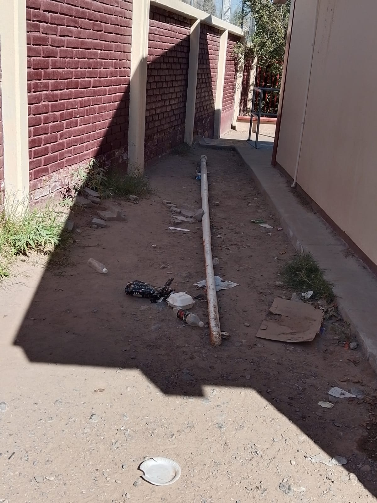

EL RECICLAJE EN NUESTRA ESCUELA
Dentro del CBTis 269, la actividad diaria de estudiantes, docentes y personal administrativo genera un volumen constante de desechos. Identificar los puntos críticos de nuestro plantel es el primer paso para transformar nuestros espacios escolares.
UNIRSE A LA BRIGADA
DIAGNÓSTICO DEL PLANTEL
Identificación de zonas con mayor generación de residuos durante el turno escolar.

EVIDENCIA DE LIMPIEZA
Acciones de recolección y separación realizadas por los alumnos de Ecovenados.
DIAGNÓSTICO AMBIENTAL ESCOLAR
QUÉ RESIDUOS SE GENERAN
Principalmente botellas de plástico PET de agua y refresco, latas de aluminio, envolturas de frituras y galletas, hojas de cuaderno, cartón de empaques y restos orgánicos de alimentos del receso.
DÓNDE SE ACUMULA MÁS BASURA
La mayor concentración de desechos ocurre en los alrededores de la cafetería, las bancas de la explanada central, las canchas deportivas y detrás de los edificios de aulas al finalizar el descanso.
QUÉ PROBLEMAS EXISTEN ACTUALMENTE
Falta de separación entre basura orgánica e inorgánica, contenedores insuficientes o saturados en horas pico, y la costumbre de dejar envases abandonados en jardineras y pasillos.